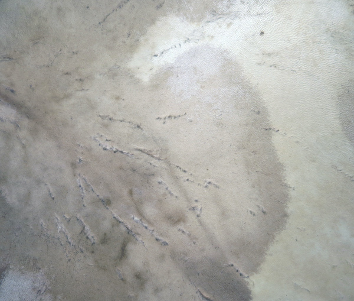
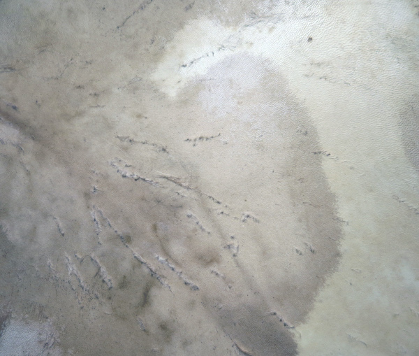

MANICULA
A project by ENRICO MALATESTA and CHIARA PAVOLUCCI.
Manicula is an artistic research format aimed at combining practices involving image and sound in relation with the themes of CITY and WALKING, with a CALM DRIFT that connects different URBAN SPACES and TERRITORIES in a common network.
Manicula consists in a collection of ACTIVE LISTENING and OBSERVATION EXERCISES aimed at investigating the acoustic and visual phenomena present in some parts of the city; the areas of activation of the practices are not declared, but indicated by reference symbol. The project is a kind of TREASURE HUNT and it does not require the presence and mediation of a performer/artist/guide. Each individual decides how to undertake the search for symbols and how to use the available scores to investigate, on the one hand, the relationship between SOUND AND SPACE through the use of the body and, on the other hand, the observation of VISUAL PHENOMENA related to the movement of light and its interaction with surfaces/layouts of the city. Manicula also invites people to continue the exploration by enriching it with their own personal research. No specific knowledge or skills are required to try the proposed exercises.
Manicula is an OPEN PROJECT that also includes live performances, workshop as well as a visual and textual JOURNAL that documents the research and the WALKING PATHS carried out in situ by the authors.

ÉLIANE RADIGUE'S OCCAM OCEAN
I am grateful to be part – since 2018 – of Radigue's Occam Ocean series by playing the solo percussion piece Occam XXVI for cymbals and frame drum, plus a series of ensemble pieces part of this vast musical project.
Occam Ocean Occam XXVI is an exceptional project, the result of collaboration between Éliane Radigue, French composer, pioneer of the exclusive use of continuous sounds, and Italian percussionist,Enrico Malatesta. Composed in Paris, in August 2018, the piece has been presented worldwide since.
Éliane Radigue stopped producing electronic music and began creating
collaborative works with instrumentalists in 2001. Since then, she has produced over 70 works ranging
from solos and string quartets to works for orchestra. She began creating Occam Ocean ‒ the series that
makes up most of this prolific output ‒ in 2011. The individual pieces share a creative process
that relies almost solely on oral and aural transmission: musicians visit Radigue at her apartment in
Paris, often returning for multiple sessions before the pieces are completed. Solo
pieces are typically based on a combination of pre-prepared sonic materials from
which Radigue selects sounds and a water-based image that guides the form of the piece.
–
Éliane
Radigue in her studio, Paris, ca. 1970s.
Photo©Yves Arman.


E SôNA
"Farmer, blood of the servant,
your plow is left without music"
E SÔNA
(“it sounds” in Romagnolo dialect) is a project by sound artist Enrico Malatesta. Using sound as a means
of knowledge and linking elements of Romagna's folklore and its rural rituals with the territories
and communities encountered at each stage of the project, the work investigates the relationship between
rural, magic–technology and local beliefs. The research is based on a long-term investigation held my
Malatesta on the CAVÉJA DAGLI ANËLL, a shaking sound instrument equipped with tuned metal rings and used
in agricultural work and in multifunctional ritual practices, and on the BRONTIDE, an unexplained acoustic
phenomenon, similar to the sound of a landslide or an explosion in the sky (in English as skyquakes),
nowadays no longer audible, and of which memory has been lost. Malatesta's intent is to overlap the energy
of these instruments and phenomena on the sound characteristics of the encountered working field and
community: the final aim is to go beyond the conceptual boundaries of local culture and transfer the
vitality of identity and popular sound habits and beliefs in the contemporary fields of music and
performance.
• ph_Caveja from the collection exhibited at MET – Museo degli Usi e Costumi della Gente di Romagna,
Santarcangelo di Romagna - Rimini. Fo.Cu.S. Fondazione Culture Santarcangelo – Musei Comunali
Santarcangelo.
• E SÔNA has been supported by Xing, Pollinaria AIR, Q-o2 workspace for experimental
music and sound art, Liminaria.
Image edit©Habitatt | Tissue©Canedicoda


Se siamo assenti suonare qui
"My grandfather is a farmer, radio amateur and an accumulator.
I can recognize his way to accumulate very common through the people of his age that come from the rural
area; the aim of the accumulation is totally functional toward preserving fragments, iron, wood and all
the components of electrical and mechanical devices that can be used to fix malfunctions of the machines
and tools used in the agricultural field. Nonetheless,I noticed that he has a slight attraction
to sounds and sometimes he reassembles things creating rudimental sound-devices that are scattered in the
field and that start to be used by my family – and the people reaching home to buy vegetables and fruits –
like entertainment and/or sound signals".
In the spring of 2023 I am going to start a series
of sound-based and self organized events revolving around the sound-devices and radios built/assembled my
grandfather around my family's agricultural field.
Tools:
• TRUCK HORN
• CYMBAL: an old and very cheap cymbal that I bought in a flea market (more
than 15 years ago) and that I had trashed in the garbage. I found this cymbal in the field in the summer
of 2016, reassembled with a system of suspension made with a car belt, two screws and a rusty iron
knocker. The cymbal and the knocker, in that condition, are let free to move on the wind spreading small
sounds by touching one to another. My grandfather hung the cymbal because when he hears its sound he
remembers me and the time when I was playing the drums all the day in his shed. My grandmother, on the
other hand, has started to beat it as loud as possible in order to advise to my grandfather when the lunch
is ready: she is tired to shout at him every time.
• RADIO


LILY
STAR
Lily Star is a selection of modified texts, anthropological annotations, anecdotes, fake names
and speech fragments collected and then assembled by the author during several years of employment as a
fireworks seller. The fieldwork was then expanded through internet-based researches; the aim of the book
is to present a flow of information concerning the socio-cultural and ecological implications, the
rhetoric of trade, the rules, the semantic aesthetics of nomenclatures and descriptions, the aberration of
use of fireworks and the sound & light synesthetic presence of pyrotechnics in different
contexts of celebration and entertainment. Far from proposing a finished project the book is the starting
point for a series of sporadic interventions dedicated to fireworks using different formats: lectures,
readings, listening sessions. Lily Star is a stage for the ephemeral power of fireworks and its transfer
from the sky to the medium of text.
Copies are available from
Lorenzo Senni's PrestoRecords.
Graphic and Layout©Bianca Schick
SOUND SPACE BODY
under contruction

Aural tools
The releases I worked on for Attila Faravelli's AURAL TOOLS are available:
• BILIA
• PIETRA DI LANGA with a text by anthropology Tim Ingold.
Aural Tools uses small runs of simple objects to document the material and conceptual processes of specific musicians' sound production practice. It is a series of devices for relating sound to space, the listener and the body in ways unavailable through traditional recorded media such as CDs or LPs.
i lift
one stone
and i am
thinking
[Robert Lax – new poems, 1962]
Thanks to the permission from the ROBERT LAX LITERARY TRUST I have officially started to work on a new, long-term project, revolving around the beauty of ROBERT LAX's poems.
• I LIFT ONE STONE AND I AM THINKING_press
ITA_pdf
_
Robert's portrait has been taken at Staatsgalerie in Stuttgart, in 1985,
by ©Judith Emery.
Nuova Superficie
Nuova Superficie is an electro-acoustic sound project by Giovanni Lami and Enrico
Malatesta is based upon horizontal actions in progress, that slowly change and melt over the course of the
performance. Sound originates from several speakers and – in general – from different diffusion points,
amplified or not, analog or acoustic, in a non-referential movement. The one and only need is to produce a
simple sound-mass, seemingly static but unceasingly evolving through the labour of the musicians. They use
their own instruments (as form and gesture) mainly on the surface, moving objects and working upon the
skin of an amplified snare or directly in contact with the tape of the reel-to-reel recorder, trying to
activate what is already present there but quiescent.
The aim is to realize a complex sound-space
where each listening-experience can be free to evolve and wander and get lost. The sound is made from
several diffusion points and is defined by sounds on the cusp of a dense texture, really homogeneous yet
rich in detail and micro-perturbations. This non-stop negotiation between details on the horizon and the
horizon itself, this lack of balance, and the interaction with the space hosting the performance is the
base of this project, that could be considered as something in between electroacoustic music and
site-specific action.

ELEMENTI
Elementi is a festival dedicated to contemporary music and performing arts whose intent is to present to
the public the transversality of contemporary languages in relation to the emotional power of symbolic and
uncontaminated landscapes of the Romagna region.
The project is curated by MAGMA and MU in collaboration with the
Municipality of Cervia.
Line up of artists Includes Clara de Asís, Gigi Masin, France
Jobin, Francesco Guerri, Sandro Mussida, Cristina
Kristal Rizzo and Riccardo La Foresta.
Saline di Cervia ph © Chiara Pavolucci


 
